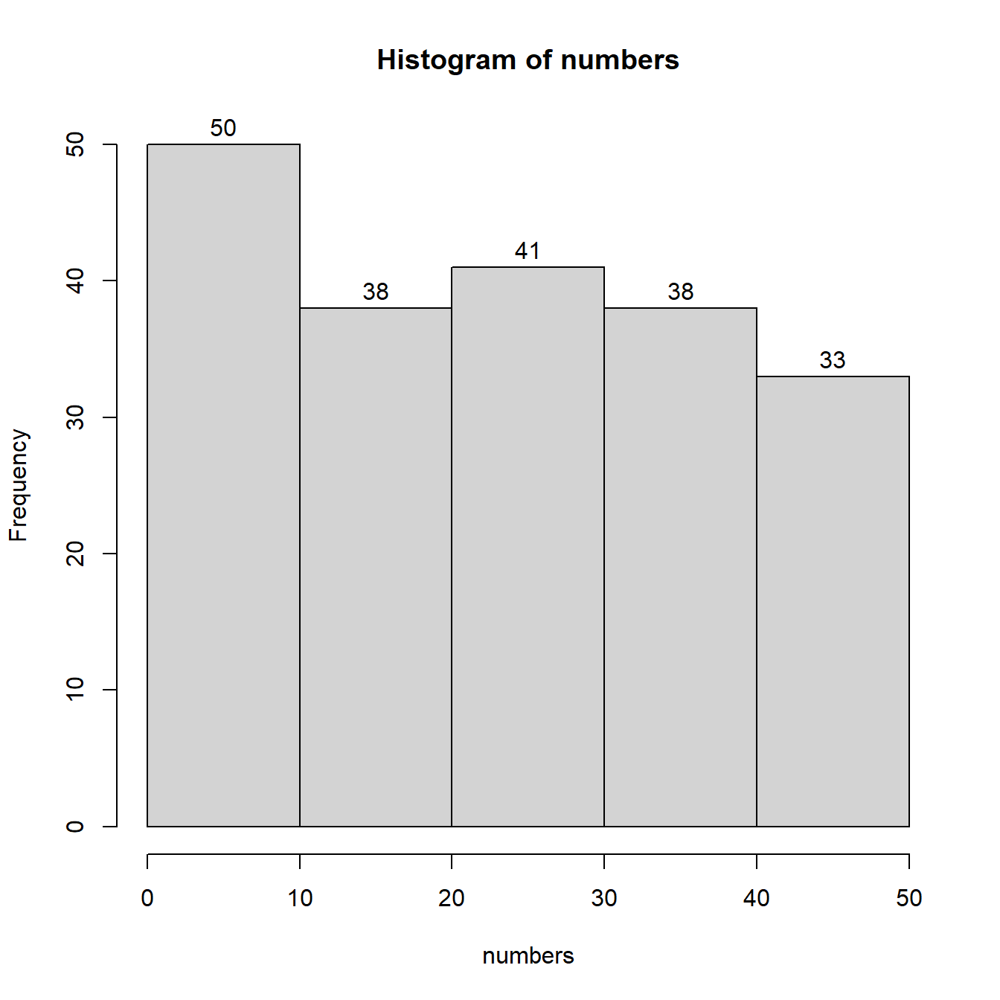

Lab Session 3 (Week 11)
2.20 Learning Objectives
In this week’s lab session we will start working on some basic concepts of statistical exploration of data. One of the first steps we take as Psychologists when we want to analyse our data, is first to get a “feel”, or gist if you want, of how are data are distributed. Moreover, we will start using functions and not just rely on simple mathematical operations. Functions are useful collections of commands that can carry out specific tasks without us having to worry about manually calculating figures.
By the end of this Lab session you should have a clear understanding of the following concepts:
- Vectors
- Functions and Arguments
- Creating Random Data for Practice Purposes
- Grouping Data using R
- Creating Frequency Tables using R
- Creating a basic Histograms using R
Before we begin, do make sure you start a new project and name it Week 11. If you are running RStudio Cloud do not start a new project, continue working on the same one from last week.
2.21 Vectors
Let us assume that we asked 15 participants to report their age. One way to record this in R would be to use one variable per participant. It would look something like the following (DO NOT TYPE THE FOLLOWING IN RSTUDIO!!)
As you can see this would take 15 variables. Not only it would look horrible but also it would be a very wasteful way to store our information.
For cases where we want to store multiple observations single value variables are not the best way forward. Actually they are the worst way forward. Instead we can use a variable that can store many different values at once, a vector. The following is an example of a vector that stores our participants 15 ages. Please do type following in your R script and do run each line to see the output. You should name your R script “Week 3”.
# We are creating a vector c and we are populating it with 15 values
# Then we assign it to a variable called Age
Age <- c(18, 18, 20, 32, 45, 33, 19, 19, 20, 58, 63, 21, 19, 19, 18)
# If we call the variable Age we will get all 15 values
Age[1] 18 18 20 32 45 33 19 19 20 58 63 21 19 19 18
[1] 19
Note we always use c() to define a vector.
The same way we did calculations with simple value variables we can also do with vectors. For example, we may have a vector or prices for products and we may want to double the price of all of the products at once:
# We are creating a vector c and we are populating it with 5 prices.
# The prices could be in £ or any other currency (we only type the value in).
# Then we assign our vector to a variable called Prices.
Prices <- c(115, 120, 200, 300, 500)
# call Price to see the values in the console
Prices[1] 115 120 200 300 500
# We now want a new variable that will include the old prices doubled.
# We can call the new variable anything we want, let us call it Newprices
Newprices <- 2*Prices
# call Price to see the values in the console
Newprices[1] 230 240 400 600 1000
[1] 19
You see how powerful and handy vectors can be as they allow us to work with many values as once. We will be using vectors a lot in our work, as well as an extension of vectors called dataframes. (More about dataframes in the future)
2.22 Creating vectors with random numbers
As we do not have any real data yet, we might want to practice out learning with some made up data sets. That is absolutely fine but it poses a problem. If we want to create a vector with 200 made up values it will take us quite a while to actually type 200 values. Luckily, there is a solution to that. We can use an R function to create these numbers automatically. Let us see this in practice with a small example. Below we will use a function called sample.int(), that can generate random integers for us.
# I am using a R function called sample.int()
# This function creates random integer numbers
numbers <- sample.int(10, 5, replace = TRUE)
numbers[1] 2 9 9 5 6
As mentioned above, I used a function called sample.int(). A function in R, is a mechanism that can perform a task. In this case our function can select an integer number randomly. A function also includes two brackets (). Within these brackets we can specify our own arguments in order to be clear what we want R to do for us when this function is used.
Notice the number 10, this argument instructs our function that we want to pick randomly a number between 1 and 10.
Notice the second number 5, this argument instructs our function to give 5 such numbers from 1 to 10.
Notice the replace = TRUE part, this is another argument instructing R that numbers could be repeated. In other words, we can see the same number appearing more than once.
2.23 Frequency tables in R and Histograms
Let us now proceed to a larger data set comprised of 200 random integers between 1 and 50. We will organise that data in 5 groups and produce a grouped frequency table. Then lastly, we will create a histogram with the same 5 groups.
# Similarly as above, I will call sample.int()
# But this time I need 200 numbers between 1 and 50.
# See how my arguments have now changed.
numbers <- sample.int(50, 200, replace = TRUE)
numbers[1] 17 18 2 33 21 11 30 7 23 37 20 11 32 14 22 27 32 7 14 46 7 7 13 7 45 [26] 1 30 35 15 42 19 28 33 45 24 49 40 15 26 16 42 34 1 14 12 15 28 34 39 14 [51] 47 33 27 8 47 39 29 30 32 21 3 31 22 31 33 41 7 39 43 6 35 35 7 11 12 [76] 12 9 34 29 46 40 23 23 37 4 13 7 13 32 12 20 13 46 9 37 11 31 34 26 37 [101] 23 33 7 41 36 23 48 23 28 49 5 2 26 38 23 50 36 21 42 46 28 29 21 38 48 [126] 12 36 38 27 3 33 33 16 43 11 35 17 22 38 50 49 33 20 16 29 42 32 32 5 31 [151] 43 23 7 48 33 34 40 30 12 12 49 7 22 29 8 27 19 22 11 22 1 8 46 32 18 [176] 19 42 41 16 32 4 30 33 26 39 13 15 49 34 13 21 32 24 49 44 26 37 11 19 23
# Now we will call a new function to help us group our data.
# First put them in 5 groups. The numbers in c() declare the numbers # that define each group. Because I generated numbers from 1 to 50
# I chose to split them in groups of 0-10, 10-20, 20-30, 30-40, # # 40-50
groups <- cut(numbers, breaks = c(0,10,20,30,40,50), right = TRUE)
# Now I can produce my frequency table using another function
# This function is called summary () and uses an object as argument
# we will use the object groups that we created just above.
summary(groups)(0,10] (10,20] (20,30] (30,40] (40,50] 28 43 45 52 32
# We will now use a new function called hist that creates
# histograms.
# Note that this function has to work with the original numbers
# and not with the groups.
hist(numbers, breaks = 5, labels = TRUE)
Let’s discuss the functions we used:
sample.init() creates a sample of integer numbers
cut() cuts our sample in smaller pieces. For arguments we had to provide our original sample (numbers). We then specified at what numbers we wanted the breaks to be (c(0,10,20,30,40,50)). Finally, we wanted the numbers on the right end of each group to be included in the count.
summary() prints out the group frequency table, we only need one argument here, the variable that contains the grouped data (groups).
hist() creates a histogram from our original sample (not the grouped one!!!). The arguments here were our sample (numbers), how many breaks we wanted (breaks = 5), and we wanted each bar to have its frequency at the top (labels = TRUE). As you can see we can define how many groups we want when we ask for our histogram. So when all we want is a histogram, then the cut() and summary() steps can be omitted. The histogram will do that behind the scenes and show us the frequencies in the graph. Try it out on your own by changing the number of breaks in the histogram.
Notice each time your run your code you will get a different frequency distribution and a different histogram. This is because we create these 200 numbers randomly and each time we are getting a new set.
Learning opportunity from using random numbers. Run the above code many times, and each time observe the new histogram. Then discuss its skewness with your group mates. Does it look as positively or negatively skewed? Keep in mind your friends will have different graphs, so it is best to share your screen and show your histogram.
2.24 Exercise 3
Create a random set of 200 integers between 1 and 40. Group that data in 8 groups and produce the grouped frequency table. Then produce a histogram using these 8 groups. Spend some time to experiments with the number of bars in the histogram as well as generating new random numbers. This will allow you to become good at judging the skewness of a frequency distribution.
2.25 Exercise 4
For this exercise you will have to upload your answers on the Moodle Module Participation section.Start a new script and save it as exercise4, in your new script type in the following two lines exactly as you see them, then select both of them with your mouse and run them. Please run them together and not one by one
This should now have created a vector called observations that includes 500 integers from 1 to 200. Using set.seed() allowed us to have the exact same numbers for all the students in the class. We will talk more about set.seed() in next week’s drop-in session. Now create a histogram that will include 10 groups. By observing your histogram go to moodle and answer the relevant questions in the Moodle Module Participation section.